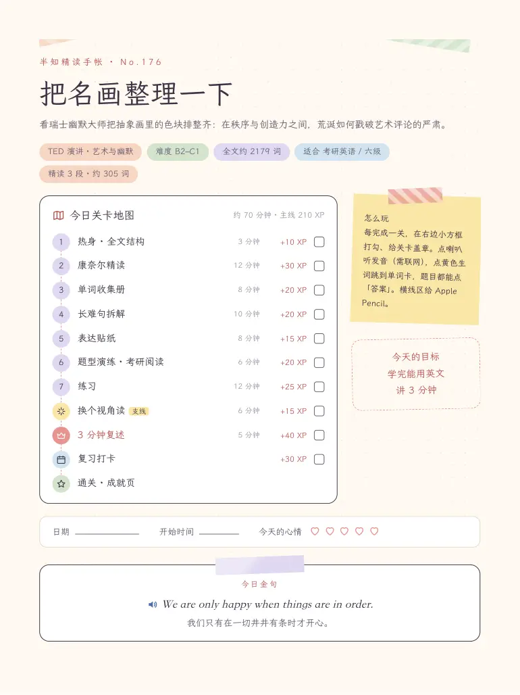

把名画整理一下
看瑞士幽默大师把抽象画里的色块排整齐：在秩序与创造力之间，荒诞如何戳破艺术评论的严肃。
B2–C1 · 70 分钟 · 7 本一组 · ¥12.90

适合谁
考研英语 / 六级
这篇练什么
用自己的话复述演讲观点，并用文中的表达写下一条观察。
看瑞士幽默大师把抽象画里的色块排整齐：在秩序与创造力之间，荒诞如何戳破艺术评论的严肃。
B2–C1 · 70 分钟 · 7 本一组 · ¥12.90

考研英语 / 六级
用自己的话复述演讲观点，并用文中的表达写下一条观察。